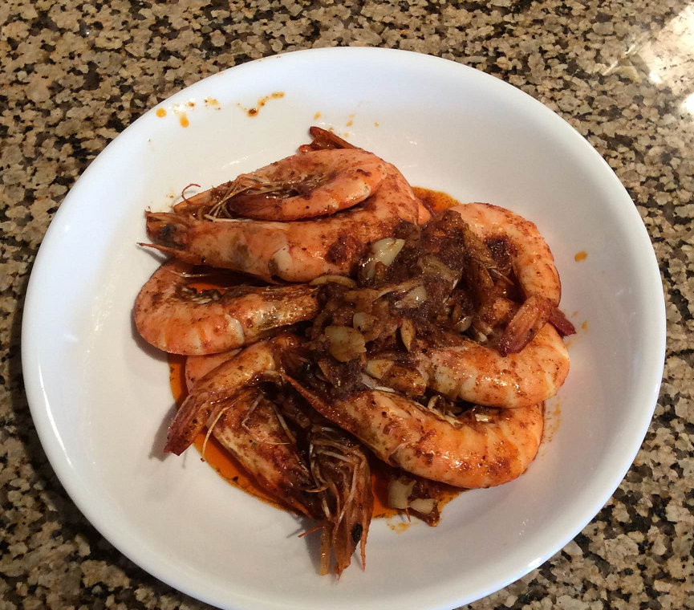

20150829 - Ketogenic Diet Working On Year 2
Part way into year two on a Ketogenic diet, breaking the diet only once and a while on business trips.
The diet is basically mostly fat, some protein, with almost no carbs.
Initially established in the 1920s as a way to control seizures for people with epilepsy,
the Ketogenic diet is being successfully used as a metabolic treatment for cancer
by a few individuals, but is largely being ignored by medical professionals.
The diet works by shifting the body's metabolism from glucose (sourced from carbs or converted from excess protein) to ketones produced in the liver (sourced from fat and oil).
The diet has natural anti-inflammatory properties.
The theory of how a Ketogenic diet fights cancer revolves around the idea that cancer is mostly a mitochondrial metabolic disease.
Specifically that cancer cells tend to have damaged mitochondria which switch to a more primitive glucose fulled fermentation as their primary energy generation process.
Starving cancer cells of glucose places them in extreme metabolic stress, allowing the body to fight back.
One of the primary ways to track cancer is by looking at the process of tumor angiogenesis via periodic MRIs with contrast.
Effectively watching over time as the cancer causes the body to develop ever stronger network of blood vessels to feed the cancer with glucose.
Successful treatments of cancer can reverse this process.
I suspect ultimately that everyone has cancer even if only at some undetectable amount.
The question is if the body's balance shifts between a state which enables the cancer to grow, or a state which causes the cancer to die.
Cancer becomes terminal when there is no longer a way to shift back the balance.
The Ketogenic diet for me is a lifestyle choice not made out of medical necessity.
My personal tastes tend to really align with the diet, and it is a great way to stay in shape,
more so when you have a career sitting at a desk typing away on keyboards.
Counter to how the media vilifies fat as the source of the nation's obesity problem,
it is near impossible to maintain body fat on the diet which involves mostly eating fat:
the body is in a constant state of fat burning, instead of fat storage.
Looking back, it was relatively hard to get started.
The realization that America's entire food culture and supply chain
is optimized for the delivery of carbs,
leaves a demilitarized zone filled with land mines for the oil fueled consumer.
Just finding things which are in the parameters required for the diet can be quite a challenge.
After a while, planning every meal, weighting all ingredients, measuring ketone levels or blood glucose levels,
is replaced with driving by feel alone.
The transition between carb burning and ketone burning body state
goes through a standard process of horrible sugar withdrawal symptoms, bouts of fatigue and brain fog, eventually returning to the feeling of being normal,
but then unaffected by the standard cravings carb eaters have.
The first transition takes weeks, however after being ketone burning for this long, the transition now only takes me a few days.
Over time the diet becomes as enjoyable as the standard high-carb diet,
and even more so in many regards, because of the ability to easily take in 70% fat at a given meal (like bacon wrapped sour cream).
Unlike sugar, there is no crash afterwards, and the body provides some rather strong signals to stop eating before you over do it,
instead of telling you to keep going as is the standard practice with sugars.
Here is an example of the kind of foods my wife and I eat: butter on low heat, mixed in spice, garlic, and boiled shrimp. Consumed head, shells and all, with sour cream on the side straight to bring up the fat content,
